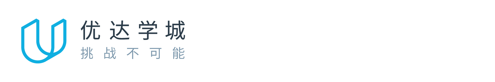

非常开心跟你一起开始新的纳米学位旅程！
为了更好地帮助到你，我们希望了解你在 Udacity 的学习体验，请抽出 1 分钟为各项内容打分。
说出你的想法，帮助我们做到更好
自决定学习当前纳米学位以来，我们有哪些方面帮助到了你，有哪些方面是你希望得到改进的，非常期待听到你的声音：
开始为各项体验打分
我们期望你已经顺利通过第一个项目，按时成功完成第一个项目是学习的良好开端。当然，如果暂时没有通过，也不用慌张，接下来的时间，只要多多努力，就可以重新跟上进度。
期待看到你提升技能并顺利毕业👏
Best regards,
优达学城课程服务团队